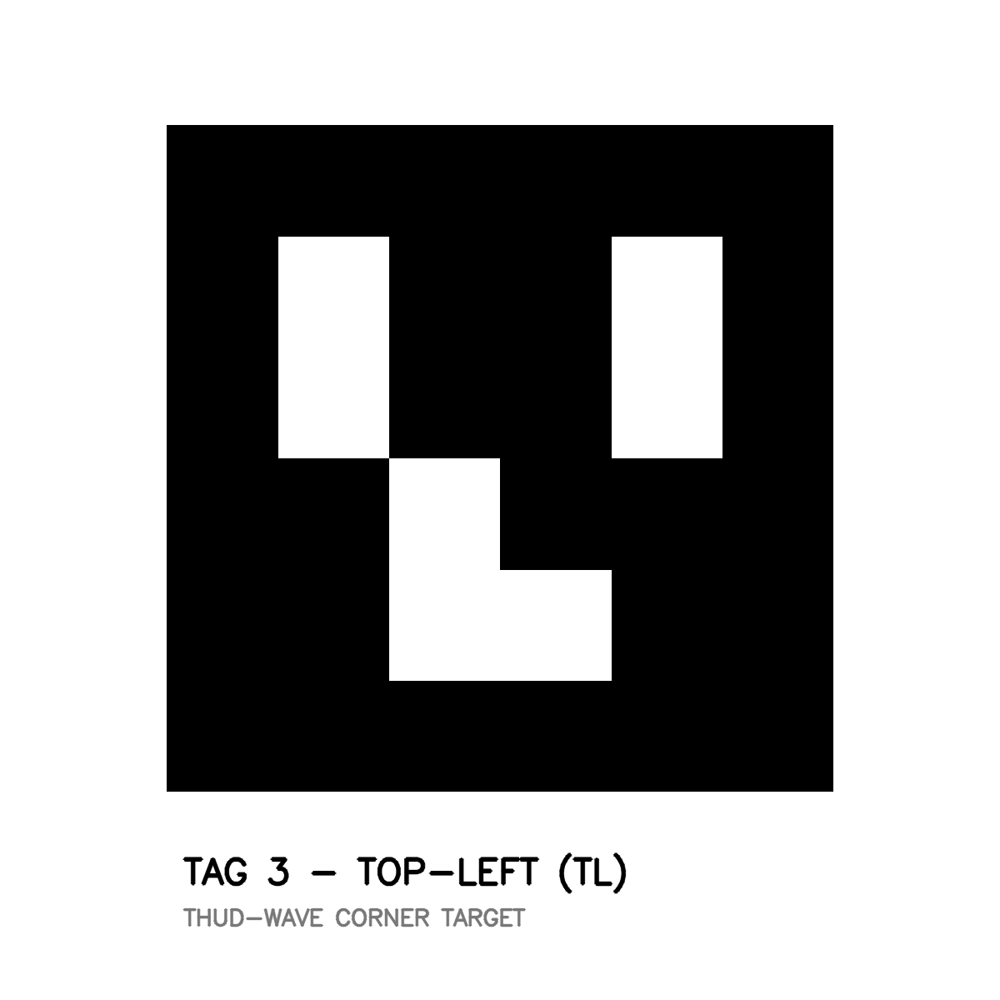
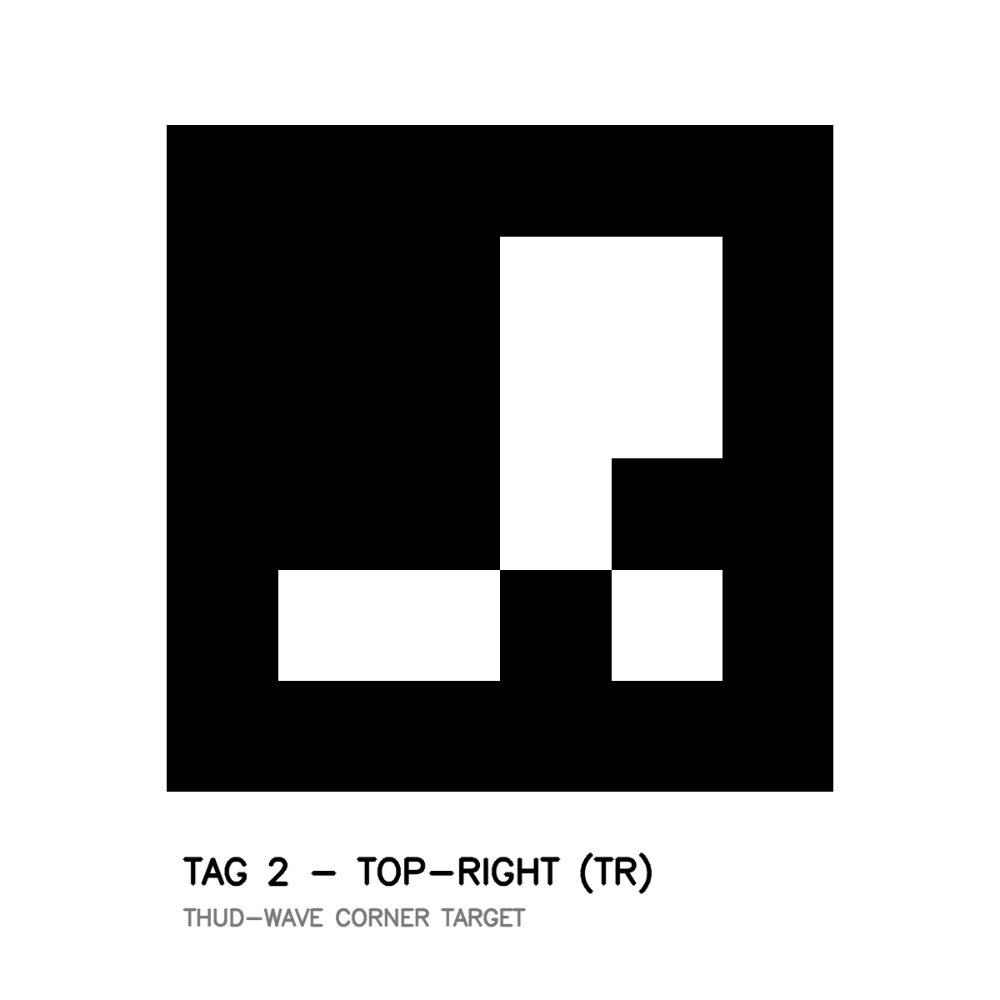
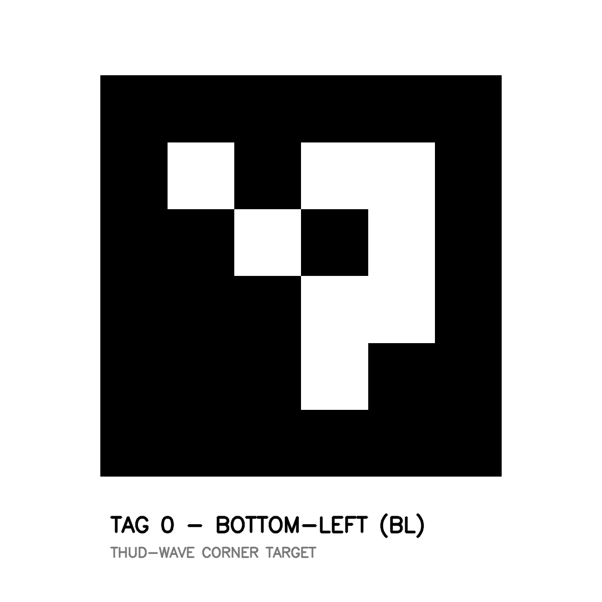
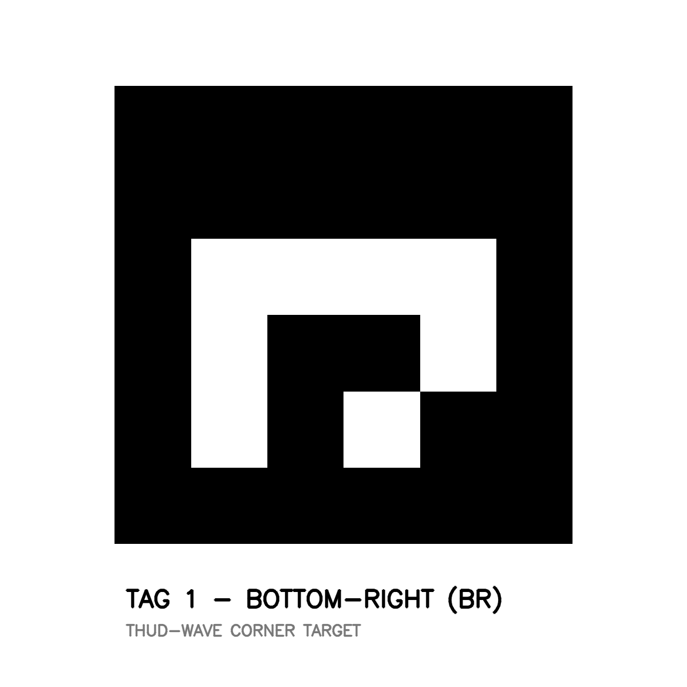

TAG 3 ➔ TOP-LEFT CORNER (TL)
Tape to the upper-left corner of your whiteboard

TAG 2 ➔ TOP-RIGHT CORNER (TR)
Tape to the upper-right corner of your whiteboard

TAG 0 ➔ BOTTOM-LEFT CORNER (BL)
Tape to the lower-left corner of your whiteboard

TAG 1 ➔ BOTTOM-RIGHT CORNER (BR)
Tape to the lower-right corner of your whiteboard